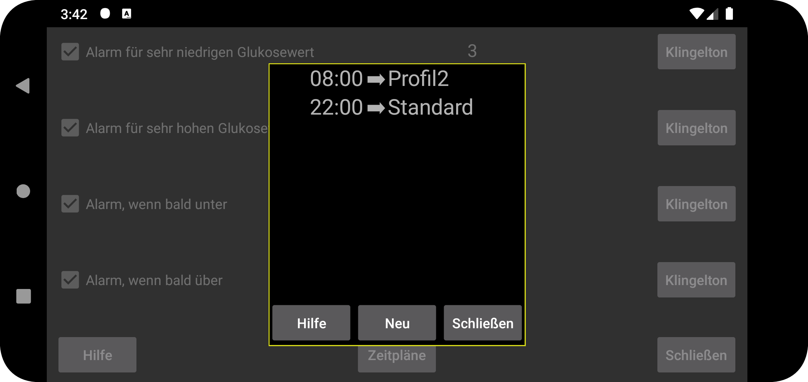
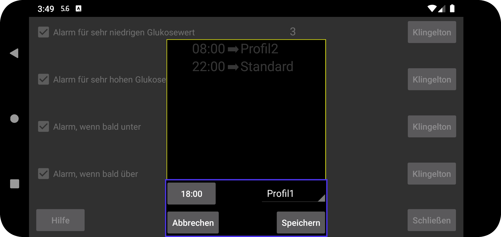

ar de es hi it ja nl ru uk uz en
Hier können Sie ein Profil zu einem bestimmten Zeitpunkt aktiv werden lassen. Drücken Sie „Neu“, um eine Zuordnung zwischen einer bestimmten Zeit und einem Profil zu erstellen. Juggluco wechselt täglich zur angegebenen Zeit zu diesem Profil. Sie können die Zuordnung eines Zeitprofils bearbeiten, indem Sie darauf tippen.
Alle Einstellungen für Alarme und Sprechen sind profilspezifisch. Welches Profil aktiv ist, wird unter linkem Menü → Einstellungen → Alarme und linkem mittleren Menü → Sprechen angezeigt. Anfangs ist das Profil „Standard“. Sie können es in „Profil 1“ oder „Profil 2“ usw. ändern. Was Sie in „Alarme“ und „Sprechen“ angeben, ist spezifisch für das aktive Profil.
Einige Benutzer schrieben, dass sie dachten, man könne nur den Wechsel zu einem Profil planen, nicht aber dessen Beendigung. Man kann aber einfach ein weiteres Element hinzufügen, das den Wechsel zum Standardprofil plant. Das hat den gleichen Effekt wie das Hinzufügen einer Endzeit.